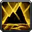
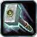
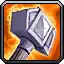
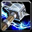
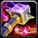

Shaman – Enhancement leveling
Leveling Split 18 / 25 / 8 (Elemental / Enhancement / Restoration)
Melee leveling with Stormstrike, Improved Stormstrike, Spirit Weapons and early Flurry, plus Elemental crit (Elemental Devastation) and Trial by Fire.
Talents in this build
Hover or tap a talent to see what it does at that rank.
Elemental · 18
- Convection 3/5

Concussion 5/5- Elemental Devastation 3/3
- Call of Flame 3/3
 Elemental Focus 1/1
Elemental Focus 1/1- Trial by Fire 2/2
- Earthbound 1/1
Enhancement · 25

Thundering Strikes 5/5- Mental Dexterity 3/3
- Improved Lightning Shield 2/3

Elemental Weapons 3/3- Shamanistic Focus 1/1
- Anticipation 1/3
- Flurry 2/5

Stormstrike 1/1- Improved Ghost Wolf 2/2
 Spirit Weapons 1/1
Spirit Weapons 1/1- Mental Quickness 2/2

Improved Stormstrike 2/2
Restoration · 8
- Tidal Focus 5/5
 Mindfulness 3/3
Mindfulness 3/3
Leveling order
One talent point per level from 10 to 60. Follow it top to bottom.
| Level | Talent | Tree |
|---|---|---|
| 10 | Thundering Strikes 1/5 | Enhancement |
| 11 | Thundering Strikes 2/5 | Enhancement |
| 12 | Thundering Strikes 3/5 | Enhancement |
| 13 | Thundering Strikes 4/5 | Enhancement |
| 14 | Thundering Strikes 5/5 | Enhancement |
| 15 | Mental Dexterity 1/3 | Enhancement |
| 16 | Mental Dexterity 2/3 | Enhancement |
| 17 | Mental Dexterity 3/3 | Enhancement |
| 18 | Improved Lightning Shield 1/3 | Enhancement |
| 19 | Improved Lightning Shield 2/3 | Enhancement |
| 20 | Elemental Weapons 1/3 | Enhancement |
| 21 | Elemental Weapons 2/3 | Enhancement |
| 22 | Elemental Weapons 3/3 | Enhancement |
| 23 | Shamanistic Focus 1/1 | Enhancement |
| 24 | Anticipation 1/3 | Enhancement |
| 25 | Improved Ghost Wolf 1/2 | Enhancement |
| 26 | Improved Ghost Wolf 2/2 | Enhancement |
| 27 | Stormstrike 1/1 | Enhancement |
| 28 | Flurry 1/5 | Enhancement |
| 29 | Flurry 2/5 | Enhancement |
| 30 | Improved Stormstrike 1/2 | Enhancement |
| 31 | Improved Stormstrike 2/2 | Enhancement |
| 32 | Enhancement | |
| 33 | Mental Quickness 1/2 | Enhancement |
| 34 | Mental Quickness 2/2 | Enhancement |
| 35 | Tidal Focus 1/5 | Restoration |
| 36 | Tidal Focus 2/5 | Restoration |
| 37 | Tidal Focus 3/5 | Restoration |
| 38 | Tidal Focus 4/5 | Restoration |
| 39 | Tidal Focus 5/5 | Restoration |
| 40 | Restoration | |
| 41 | Restoration | |
| 42 | Restoration | |
| 43 | Concussion 1/5 | Elemental |
| 44 | Concussion 2/5 | Elemental |
| 45 | Concussion 3/5 | Elemental |
| 46 | Concussion 4/5 | Elemental |
| 47 | Concussion 5/5 | Elemental |
| 48 | Convection 1/5 | Elemental |
| 49 | Convection 2/5 | Elemental |
| 50 | Convection 3/5 | Elemental |
| 51 | Elemental Devastation 1/3 | Elemental |
| 52 | Elemental Devastation 2/3 | Elemental |
| 53 | Elemental Devastation 3/3 | Elemental |
| 54 | Call of Flame 1/3 | Elemental |
| 55 | Call of Flame 2/3 | Elemental |
| 56 | Call of Flame 3/3 | Elemental |
| 57 | Elemental | |
| 58 | Trial by Fire 1/2 | Elemental |
| 59 | Trial by Fire 2/2 | Elemental |
| 60 | Earthbound 1/1 | Elemental |
Other Shaman builds: Elemental · Enhancement · Restoration healer · Elemental leveling · Elemental PvP · Shaman tank (shield + Rockbiter) off-meta · Elehance (Elemental/Enhancement) off-meta